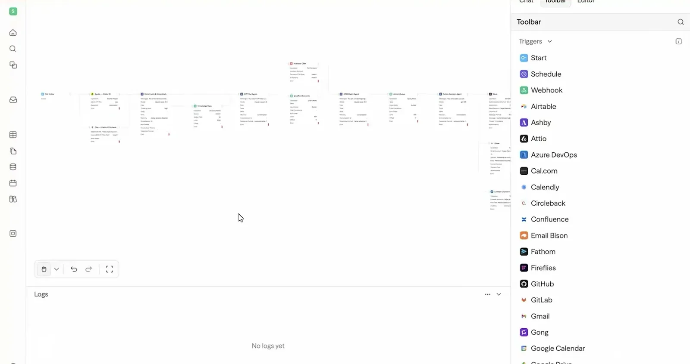
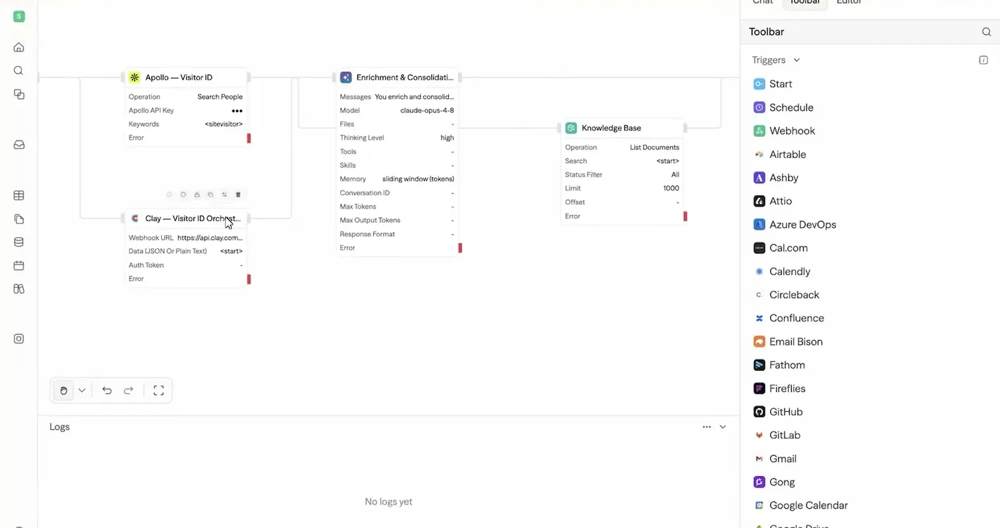
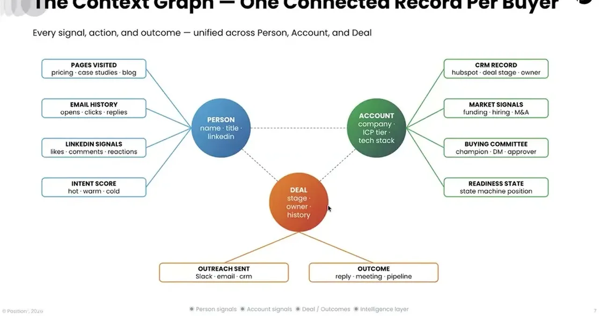
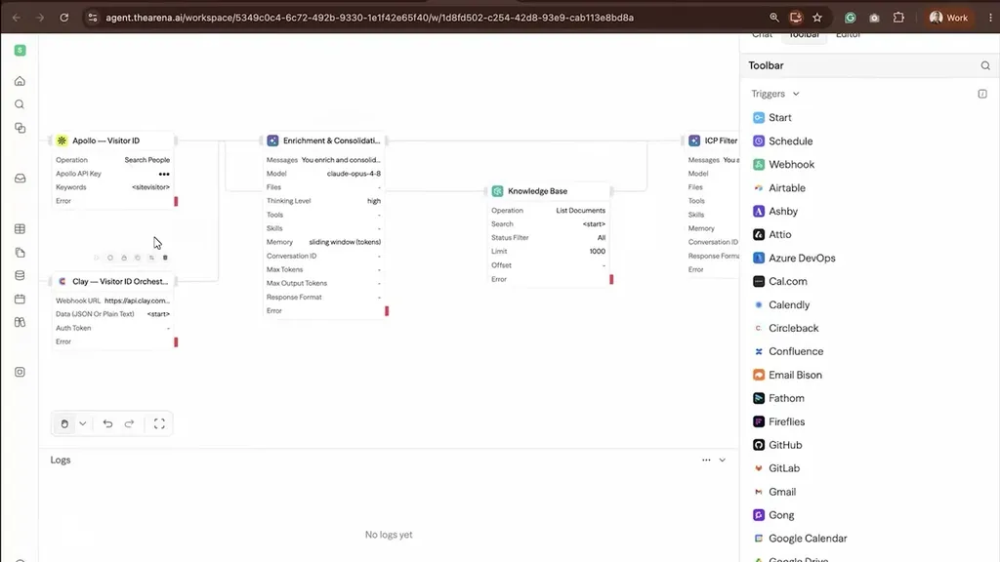
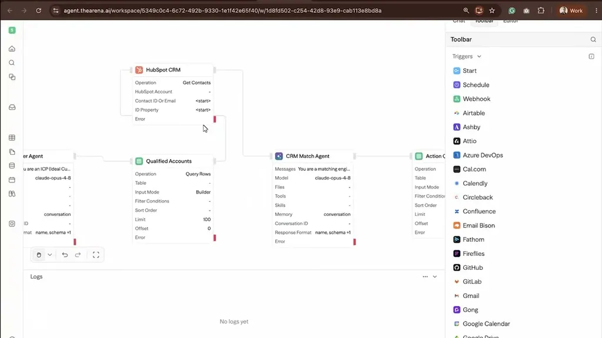
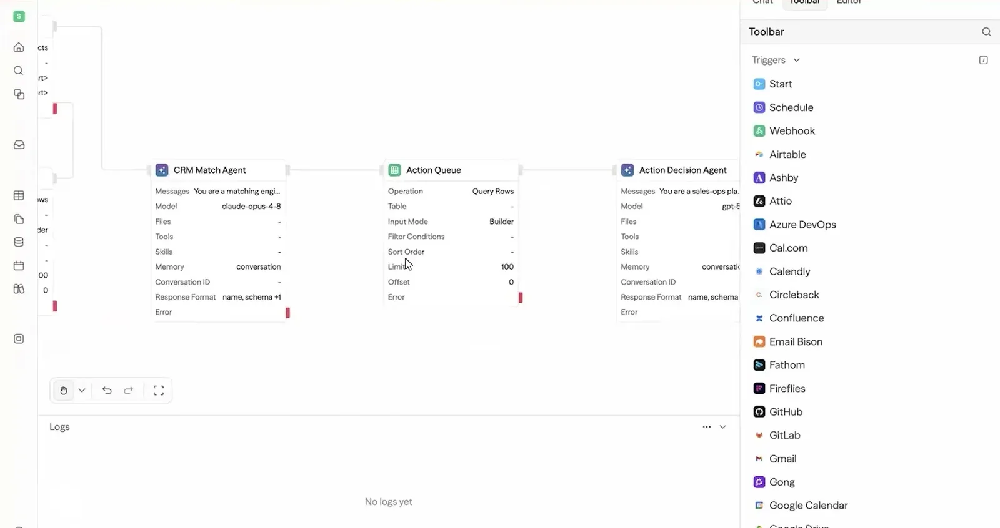
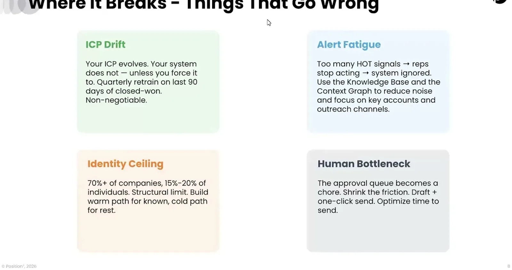

Build the AI GTM Agent That Knows the Buyer
Position2 builds a three-layer GTM architecture (signals, buyer intelligence, action) around a per-buyer context graph with concrete accuracy limits and edit-time thresholds.
If you only read one thing
- By the time buyers reach a vendor's site they're already late-stage: 80% of deals go to buyers already on the pre-contact list, and only 17% of buying time is spent talking to vendors (c2, c3).
- Generic chat-widget questions ('What can I help you with?') push already-informed buyers away; personalization requires a signals + buyer-intelligence + action architecture built around a per-buyer context graph.
- Two hard limits to plan around: identity resolution is only 15-20% accurate for individuals even though ~70% accurate for companies (c6), and AI-drafted emails needing more than 30 seconds of editing get abandoned by reps (c7).
This traces Position2's own signals/intelligence/action layers to the four failure modes Kanukolanu names, mapped by us onto the layer each one undermines (ours).
Why this talk is a blueprint, not a take (ours)
Scope: A GTM personalization system for a specific class of buyer, B2B accounts already researching a vendor before first contact, built and run internally by Position2 for its own clients.
A chained agent pipeline (visitor identification with multiple tools, enrichment/consolidation, an ICP filter agent against a knowledge base, a CRM match agent, and an action-decision agent) that turns an anonymous site visit into a scored, routed account with a personalized chat greeting, a rep alert with a drafted email, a CRM update, or a sequence trigger, all tied together by a per-buyer context graph spanning person, account, and deal.
Prerequisites the talk implies:
- An existing CRM (HubSpot in the demo) and enrichment/identity-resolution tool stack to plug the pipeline into, since the architecture assumes signals already exist, not that Position2 supplies them
- A maintained knowledge base of ICP criteria, personas, and playbooks that the filter agent checks contacts against
- A quarterly retraining process against closed-won/closed-lost data so the ICP knowledge base does not drift stale
What the talk does not say:
- No cost or per-agent-run pricing figures, despite citing 800-plus runs per month across 75-plus client agents and 18 knowledge bases
- No error or false-positive rate for the ICP filter or CRM match agents themselves, only the separately cited 15-20% individual identity-resolution ceiling
- No detail on how 'policy engine' routing logic is authored, audited, or adjusted beyond the closing recommendation to make it auditable and never hardcode it
If you were to replicate one thing first: Start by wiring one anonymous-visitor identification step (accepting that no single tool catches everyone) into your existing CRM, before adding an ICP filter, match, or action-decision agent on top.
| Component | What it does (from the talk) | Evidence | Slide |
|---|---|---|---|
| Visitor identification (Apollo + Clay) | Runs more than one identification source together on an anonymous site visit since no single tool catches every visitor, then consolidates and dedupes the results | c10 · 13:38 |  |
| Enrichment & consolidation agent | Enriches and consolidates identified contacts before they move to the intelligence layer | c10 · 13:38 |  |
| Knowledge base | Holds ICP criteria, product context, and playbooks that the ICP filter agent checks contacts against | c4 · 12:38 |  |
| ICP filter agent | Weeds out contacts that don't fit the defined ICP criteria (wrong industry, geo, size, or persona); the rest become qualified accounts | c4 · 12:38 |  |
| CRM match agent | Checks qualified accounts against the CRM (HubSpot) to see whether the account has already been talked to, and how warm or hot it is | c4 · 12:38 |  |
| Action decision agent | Decides what happens next per person or per buying committee: rep Slack alerts with context and a draft email, or a sequence trigger | c8 · 21:57 |  |
| Identity resolution ceiling | Company-level identification is roughly 70%+ accurate but individual-level identification is only 15-20% accurate, a structural limit of current tools | c6 · 22:59 |  |
| 30-second edit wall | If an AI-drafted email takes a rep more than about 30 seconds to edit, they abandon it and write from scratch instead | c7 · 24:01 |
Buyers arrive with the decision mostly made
- Kanukolanu frames the core problem as buyers who research extensively before ever engaging a vendor, using GenAI tools that give sellers no visibility into what was consumed.
- He cites Forrester 2026 stats: most deals go to buyers already on a pre-contact list, and vendor conversations occupy only a small fraction of total buying time.
“80% of deals go to the buyers who are part of the pre-contact list.”
said at 04:11“only 17% only 17% of the total buying time is spent talking with potential vendors.”
said at 04:20
Position Squared's scale as of June 2026
- He describes Position Squared's own deployment as evidence of scale: dozens of AI agents built for clients, backed by numerous vertical knowledge bases, running hundreds of executions per month as of month-to-date June 2026, with expected growth by year end.
“power these agents, and we've had 800-plus runs per month, and this is data as of month-to-date June 2026.”
said at 01:01Three architecture layers: signals, intelligence, action
- The proposed system has a signals layer (CRM, enrichment, LinkedIn engagement/job-change data), a buyer-intelligence layer (a knowledge base of ICPs, personas, and scoring plus a context builder and routing logic), and an action layer (personalized chat, rep alerts, CRM updates, sequence triggers).
- As implemented, an anonymous site visit kicks off an identification job running more than one tool (since no single tool catches every visitor), then an enrichment/consolidation step, then an ICP filter agent that checks contacts against the knowledge base, then a CRM match agent, then an action-decision agent that drafts alerts and emails.
- All signals per person roll into a connected context graph spanning persona, account, and deal level, which is used to prioritize which accounts sales and marketing pursue.
“And all these together with all those signals and data points and touch points become a context graph.”
said at 12:38“no single tool catches every visitor. We pull the information provided by these tools, consolidate them, and dedupe them”
said at 13:38Where these systems break
- He names four recurring failure modes: ICP drift (knowledge bases going stale as the ideal customer profile shifts, requiring quarterly retraining on closed-won/closed-lost data), alert fatigue (over-flagging causes reps to stop trusting and acting on alerts), an identity-resolution accuracy ceiling (roughly 70%+ for company identification but only 15-20% for individuals), and a human bottleneck where AI-drafted emails needing more than about 30 seconds of editing get abandoned in favor of writing from scratch.
“If everything is flagged as hot to a sales rep, they would stop acting because it's it just gets overwhelming for them.”
said at 21:57“They're only about 15 to 20% accurate when it comes to individual identification.”
said at 22:59“if it's longer than 30 seconds, then this is a dead initiative because the sales would then rather focus on drafting their own email as opposed to trusting what the system gives them.”
said at 24:01Commentary (ours)
The 30-second edit threshold and the 15-20% individual-identification ceiling are the two most falsifiable, reusable numbers here; both are worth testing against whatever identity-resolution vendor or draft-review tooling anyone is evaluating (ours).
Underlying detail — every claim, typed and timestamped (10)
| Stance | Claim | t |
|---|---|---|
| asserts | The large majority of buyers now use GenAI tools as their primary research method before engaging a vendor. | 03:37 |
| asserts | Most deals go to buyers who were already on the vendor's pre-contact list before engagement began. | 04:11 |
| asserts | Only a small fraction of total buying time is spent talking with potential vendors. | 04:20 |
| asserts | All collected signals and touch points combine per buyer into a context graph that determines account prioritization. | 12:38 |
| asserts | Position Squared runs hundreds of agent executions per month for clients as of June 2026. | 01:01 |
| warns | Anonymous visitor identification tools are far less accurate at the individual level than the company level, a structural limit of current tools. | 22:59 |
| warns | If an AI-drafted email takes reps more than about 30 seconds to edit, they abandon the system and write their own instead. | 24:01 |
| warns | Flagging too many accounts as hot causes sales reps to stop trusting and acting on alerts. | 21:57 |
| recommends | Teams should retrain their agents' ICP knowledge every quarter using closed-won and closed-lost deal data to prevent drift. | 21:27 |
| asserts | Because no single identity-resolution tool catches every visitor, the system runs more than one source together, then consolidates and dedupes the results before enrichment. | 13:38 |
Machine-readable copy embedded in this page (script#ontology) and in the corpus ontology.